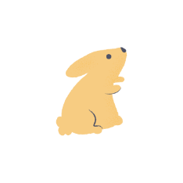
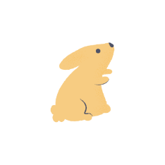

The pet business partners within Amazon requested aid with “re-branding” of their category. They expressed concern that the pet business was overlooked by customers who preferred to shop with competitors. They want to position themselves as leaders in the category with the knowledge and the ability to meet the needs of any pet parent and their pet. They also aim to have a well performing Instagram account. The deliverable is a blue-print for branding in both digital and print.
Before we could begin we had to look at the landscape of this business. We looked at top retailers and brands around the world to determine what traits customers are attracted to. In addition, we analyzed color usage, photography and graphic treatment.
Once we felt we understood the business, we presented 3 concepts that would be unique to the Amazon Pet category. Identifying pros and cons for each one, the business partners chose to combine 2 concepts. They liked the large toolkit of one and the ownership of another.
The color is influenced by colors found in nature. Animal color in particular.
Graphic usage was divided into 3 sections. 1 is foundational, following the lead of the core brand with simplicity and authenticity. This is to be used onsite. 2 is for visual enhancements. This is the tone of the brand and it’s identifying markers. This to be used particularly offsite. 3 is for social media only. These are decorative elements to dress up product and photography.

I owned illustration for this project with guidance from the Art Director. The drawings are simple and loose with hand drawn qualities. They embody the care-free nature of our own pets.
 
